Amsterdam
Click here to go back to the main page!
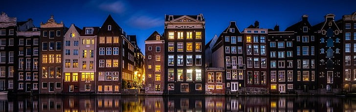
About the City |
|
Starting out as “a small medieval settlement on dikes containing the Amstel where it met the IJ” (Wintle), Amsterdam has always had a remarkable connection with its surrounding waters. In the seventeenth century, also known as the Dutch Golden Age, the city’s strategic location along the Ijsselmeer and links to the North Sea allowed it to become the commerce capital in Europe. Trade was booming and colonization through the Dutch East Indian Company was rapid. Much of the city’s current architectural charm can be connected back to its past success. With hundreds of canals, the city is divided into approximately ninety small islands connected by over thirteen-hundred bridges. On each of these small islands are blocks of Amsterdam’s famous canal houses which previously served as warehouses and living quarters combined. Nowadays, most of the canal houses have been turned into apartments and the canals are primarily used for transport and drainage--given that the city is one-half of a meter below sea level (Wintle). |
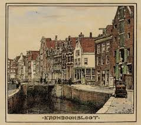
|
|
Basics |
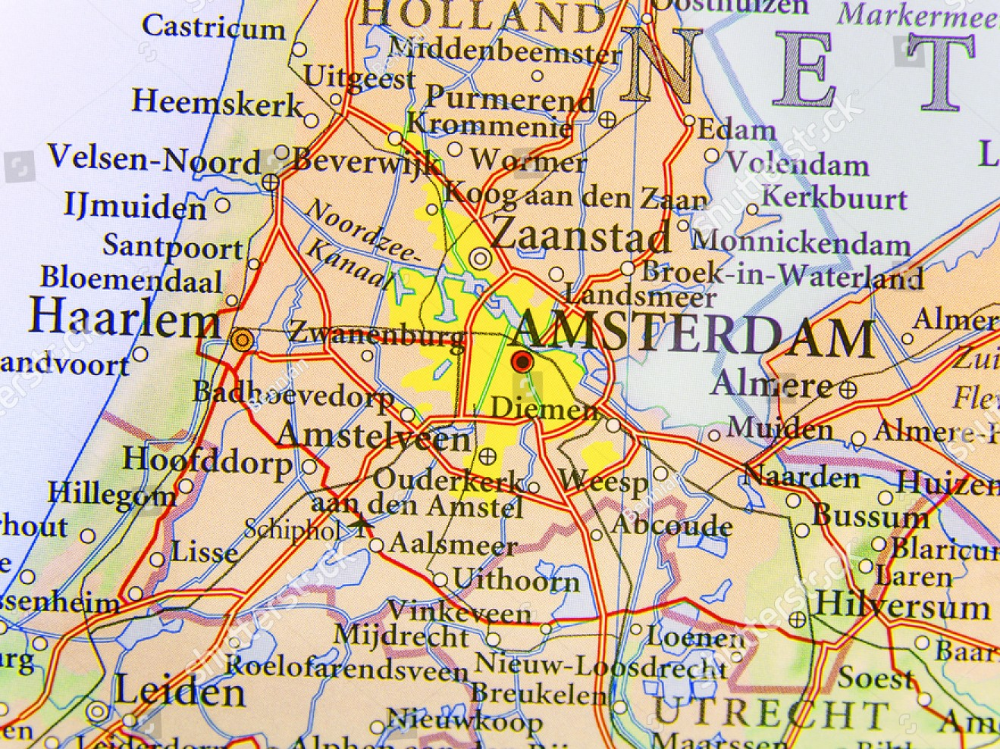
| - Capital of the Netherlands.
- The official language is Dutch, but many people also speak English, German, and French.
- The currency is Euros. 1 Euro = 1.10 American Dollars.
- There is no need to tip when dining out.
- Sales tax is included in the ticket price.
- Dutch people are known for their directness and may come over as rude.
|
|
Top Attractions
Shopping Spots
Kalverstraat |
|
No matter the day of the week, Kalverstraat is always filled with people carrying numerous paper bags hopping from one store to the next. The lengthy street is the most famous shopping spot in Amsterdam. It starts at Dam Square--the most prominent square in Amsterdam located alongside the Dutch Royal Palace--and it runs all the way to Muntplein Square where there is a three-story mall. Most shops are open every day from ten until seven. On Thursday, stores are commonly open until nine o’clock due to the Dutch tradition of koopavond--late-night shopping (“Kalverstraat”). |
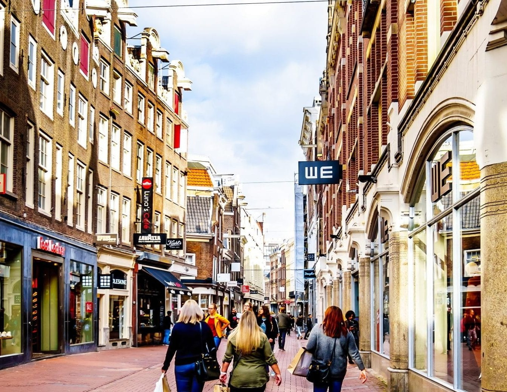
|
|
De Jordaan |
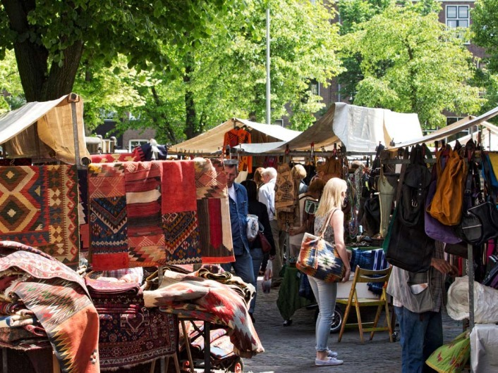 |
In the center of Amsterdam lies a district known as de Jordaan; it is one of the most popular places in Amsterdam. A former “working-class neighborhood” primarily occupied by immigrants, de Jordaan has been transformed into “one of the most expensive, upscale locations of the city” (“Jordaan”). The narrow cobblestone streets are filled with upscale boutiques, specialty shops, art galleries, and extraordinary restaurants making it a perfect area to visit and do a little shopping. One place to stop by when strolling through the neighborhood is de Negen Straatjes--the nine little streets-- the cozy streets located in the Canal Belt house a variety of unique little shops and cafes. (examples). Another spot in De Jordaan worth noting is the Noordermarkt next to the historical Noorderkerk--Northern Church. The Noordermarkt hosts a farmers’ market on Saturdays with organic produce, fresh meat, and authentic Dutch cheese, and on Mondays, the square is filled with art, antiques, trinkets, and vintage clothes for the weekly flea market (“Jordaan”). |
Place To Relax
Vondel Park |
|
Located just a couple of minutes southwest of the city center is a beautiful tranquil park. The 116-acre slice of greenery filled with ponds, fields, gardens, and paths is the perfect place to visit when one needs to unwind. On a sunny day, one can find couples picnicking in the grass, children playing in the playground, tourists admiring the statues and sculptures, and elderly companions biking together. Vondel park is home to a rollerblade rental, a rose garden, numerous cafes and even an open-air theater occasionally used to host free concerts during the summertime. The park is open from dawn until dusk. Although it is completely safe during the day, it is best not to visit the park after sunset (“Vondelpark”). |
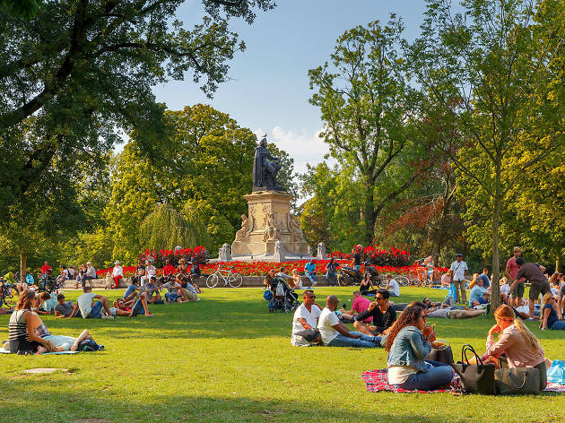
|
Picture Worthy Spots
I AMsterdam |
|
For over a decade, tourists from all over the world have snapped a picture with the giant two-meter red and white I Amsterdam letters. Before 2018, the most popular spot to get a selfie with the famous letters was the Museumplein, however, because of complaints of overcrowding tourists the letters were removed from the heart of the city. Today, two of its sister sets can still be permanently found in front of Schiphol airport and next to Sloterplas Lake where the letters are part of a free-style parkour track. The third set of letters, formerly in front of the Rijksmuseum, is always on the road and pops up all over the city (Dixon). |
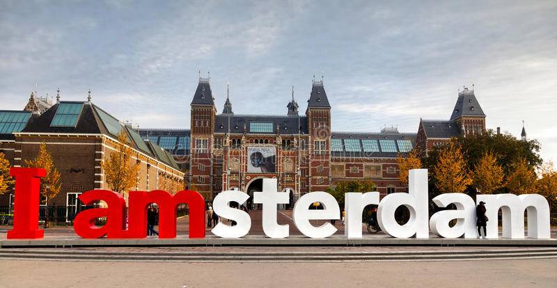
|
|
Bloemenmarkt |
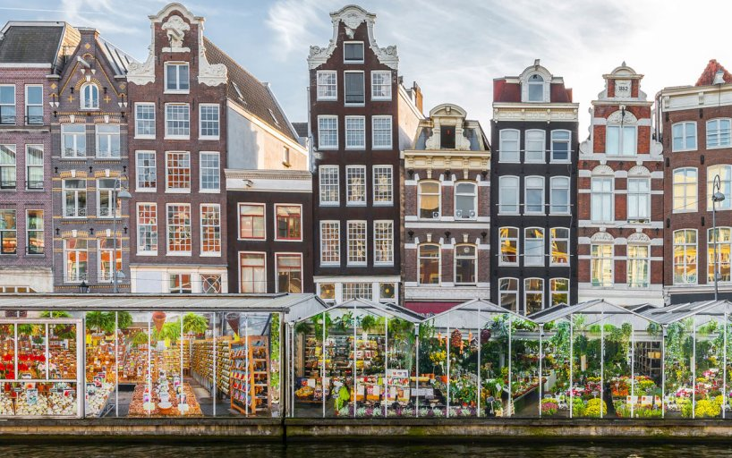 |
The world’s only floating flower market is located in Amsterdam. The year-round flower market is made up of a dozen permanent houseboat stalls selling everything from famous fresh-cut Dutch tulips to flower bulbs. The small glass stalls are filled with a wide variety of colorful, fragrant flowers making it the perfect spot to pose for a quick picture. If you are looking for souvenirs this is also a great place to purchase small gifts: clogs, postcards, keychains, and Dutch cheese (Adams). |
Museums
Anne Frank House |
|
In the center of Amsterdam, Prinsengracht 263 started out as a building like all others. It was simply an office and warehouse; a place where Otto Frank ran the new Dutch branch of the German company selling a gelatin-like product called Opekta. In 1942, however, the ordinary Amsterdam canal house evolved into a hiding place housing two Jewish families, the Frank family and the van Pels family. Today, Prinsengracht 263 is a museum telling the story of its former one of the inhabitants: Anne Frank. Anne Frank was the youngest daughter of Otto and Edith Frank. She was passionate about writing and started to keep a diary when she turned thirteen, shortly before she was forced to hide in the annex of her father’s company. The diary of Anne Frank portrays her thoughts, feelings, and some of her own creative writing up until the summer of 1944, when the annex was discovered, and all of its inhabitants were deported to concentration camps. The Frank family initially spent time in Auschwitz, whereafter Anne and her older sister, Margot, were sent to Bergen-Belsen. Due to the horrific conditions inside the camp, they both contracted typhus and died just several weeks before the end of the war. The only person from the annex to survive the Holocaust was Otto Frank; he later published his daughter’s diary and was involved in the creation of the Anne Frank house (“Who was Anne Frank?”).
At the Anne Frank House, one is able to see the annex where Anne Frank once lived. The personal belongings of the other people who hid in the annex are also on display in addition to information about their lives. Visiting the museum is an impactful educational experience that draws many visitors. The entry fee is fourteen euros for adults, seven euros for youth aged seventeen to eleven, and four euros for children aged eleven and under. In addition to this, there is a one euro booking fee. Tickets are not sold at the door, so one should be sure to purchase them ahead of time (“Tickets”). |
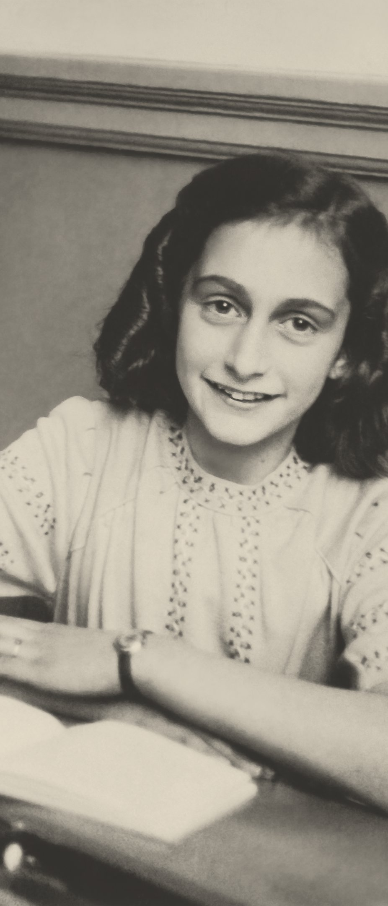
|
|
Van Gogh Museum |
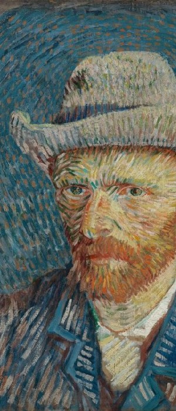 |
Vincent van Gogh is one of the most well-known painters. Some of the artist's most famous masterpieces include Sunflowers, Almond Blossoms, The Bedroom, and Self-Portrait with Grey Felt Hat. At the van Gogh museum, one is able to explore each of these remarkable paintings and learn more about their creator (“The Permanent Collection: Van Gogh's Masterpieces”).
Van Gogh was born in 1853 In Zundert, the Netherlands. Over the course of his life, van Gogh lived in numerous places throughout Europe: The Netherlands, Belgium, England, and France. He took on many different occupations including art clerk, school teacher, and lay preacher until eventually, he became an artist at the age of twenty-seven. Van Gogh had many struggles in his life from the disapproval of his family, failing relationships, financial difficulty, and physical, as well as, mental illness. Van Gogh died by suicide at the age of thirty-seven. Although some of his work began to gain recognition, his fame did not pick up until several decades after his death.
Theo van Gogh--one of Vincent van Gogh’s younger brothers--gained ownership of the paintings after his beloved brother’s death. In memoriam, he attempted to create an art exhibition, but Theo van Gogh fell ill and died shortly after his brother’s death. His widow, Johanna van Gogh-Bonger, then decided to pursue the journey of fame for van Gogh. She lent out the paintings, set up exhibitions, and published the many letters the close brothers had exchanged throughout their life. After Johanna van Gogh-Bonger’s death, it was her son--also named Vincent--who loaned out the paintings to the state of the Netherlands, which eventually created the van Gogh Museum in 1973 (“Vincent's Life, 1853-1890”). Currently, over two million people explore and admire the work of Vincent van Gogh in the museum located in Amsterdam every year. It is one of the most beloved museums in the city. Tickets are only available online; admission is nineteen euros per adult and free admission for anyone under the age of eighteen. With the I Amsterdam Card, admission to this extraordinary museum is free (“Tickets and Ticket Prices”). |
Rijksmuseum |
|
The Rijksmuseum is one of the oldest and most renowned museums in the Netherlands. In 1800, it first opened its doors as the National Art Gallery in The Hague. It was established “as a ‘prestige project’ to inspire patriotic feeling”. When Napoleon Bonaparte took control of the Kingdom of Holland in 1808, the museum was moved into the Royal Palace in Amsterdam. Several years later, King Willem I named it the Rijks Museum and moved it once again. The museum stayed located in the Dutch capital although many of its pieces were relocated to various places in the Netherlands. In 1876, construction started on a new building designed by the famous architect Pierre Cuyper; it officially opened in 1885 and came to house the vast majority of old art collections in Amsterdam in addition to its previous collections. Since then, the museum has undergone many changes and renovations. The most recent renovation took place from 2003 to 2013, when the museum was restored to its original design by Cuypers. The museum currently portrays the history of the Netherlands through the centuries in chronological order and attracts several million visitors each year (“History”).
Some of the most famous pieces on display in the Rijksmuseum include The Nightwatch by Rembrandt van Rijn. This extraordinary artwork capturing one of Amsterdam’s early civic guard groups in action is difficult to miss as it is over eleven feet tall and fourteen feet wide (“The Night Watch, Rembrandt van Rijn, 1642”). The Milkmaid by Johannes Vermeer is another famous painting from the seventeenth century which portrays a simple everyday task--a maid peacefully pouring milk (“The Milkmaid, Johannes Vermeer, c. 1660”). The collections at the Rijksmuseum do not solely consist of paintings; there is a wide variety of artworks ranging from sculptures to jewelry and dollhouses to weaponry. The Rijksmuseum has a lot to offer; one can either explore the museum by themselves or book a guided or private tour. General admission is free for individuals ages eighteen and below, and nineteen euros for those older than nineteen. Booking ahead of time is recommended, this can be done on their website: Once again, with the I Amsterdam Card admission would be free (“Visit the Rijksmuseum”). |
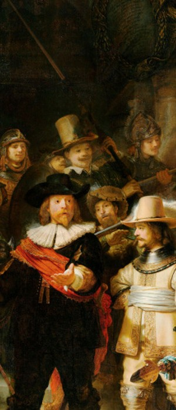
|
Transportation
Places to Note
Amsterdam Central Station |
|
Amsterdam Central Station is the largest station in Amsterdam located in the heart of the city. Designed in the late 1800s by Pierre Cuypers, the station reflects Dutch Neo-Renaissance architecture. It is estimated around 162,000 people travel through every day. From the station, there are ferries, trams, meteors, buses, taxis, and rental bikes readily available to transport passengers to their next adventure (Coggins).
|

|
|
Shiphol |
 |
Schiphol is the Netherlands’ largest international airport located just twenty minutes outside of Amsterdam. A former military airfield, the airport is over one hundred years old and still expanding. There are excellent connections to the public transport network with a train station located inside the airport, and bus lines departing directly from Schiphol Plaza (“More than 100 years of Schiphol”).
|
Best Modes Of Transportation
Biking |
|
The Dutch way of transportation is biking. There are far more bikes in the Netherlands than there are people. It is estimated that eighty percent of Dutch people bike at least once a week, and they are professionals at it. In middle school, Dutch students are required to take a written and practical exam on the rules of the road. Afterward, people possess such skill and experience that only point five of a percent of people wear helmets while biking. It is common knowledge in the Netherlands that the quick way to spot a tourist is by their helmet or lack of biking skills. The Dutch are raised with biking and will bike everywhere--school, the gym, work, and the store. Cities are made bike-friendly, with bike paths everywhere and limited car access. When visiting Amsterdam, you should stay aware of cyclists on the road. Do not walk on the bike paths and double-check for cyclists when crossing the street; they are very fast and difficult to detect simply by sound. The easiest way to get around in Amsterdam is probably simply renting a bike, but make sure you know how to because the Dutch will not be patient (Roberts).
|

|
|
Public Transportation |
 |
The public transportation system in the Netherlands is remarkable. Amsterdam has many ways to get around: ferries, trains, buses, trams, and metros. The most budget-friendly way to explore the city for a multiple-day stay is by buying a city card ahead of time. Most deals will include unlimited access to several modes of transportation, and some like the I Amsterdam City Card even include free access to numerous famous museums, a canal tour, and dining discounts. For those who do not plan on traveling as much, single-day cards or hour cards are ideal. It is important to note that no matter how you plan on traveling, you have to plan ahead and get your tickets beforehand. The Amsterdam public transit system stopped accepting cash in 2018, so be sure to take this into consideration when planning to purchase a ticket. (“Public transport in Amsterdam”).
|
Food
Stroopwafel |
|
Stroopwafels--which roughly translated to syrup waffles in English--are famous Dutch cookies that have been around for centuries. They originally came from the Dutch city Gouda, where the invention of the cookie was not intentional but became popular very rapidly. After bakers all across the nation started to bake them, the stroopwafel became a Dutch staple.
In order to make a stroopwafel, first, a thin vanilla-cinnamon waffle is baked. Then, with great care, the thin waffle is sliced horizontally into two paper-thin halves. Thick caramel syrup is lathered on one half before they are reunited to create a delicious stroopwafel (“History”).
Where can I eat it?
Stroopwafels can be found in any bakery, grocery store, or even gift shop. Of course, the best stroopwafels however are those freshly made before your eyes with the waffle still steaming and the caramel still molten. When eating a pre-packaged stroopwafel bought in your typical grocery store, it is possible to recreate the truly traditional stroopwafel experience by simply warming the stroopwafel on top of your steaming hot cup of coffee or tea (“History”).
|

|
|
Broodje Haring |
 |
What is it?
For centuries the Dutch have been eating raw herring. Herring is a small fish typically caught in the North Sea. With its high fat and nutrient percentage, herring was traditionally more of a practical meal since it is able to be put on salt and kept all winter. Today, the process of preparing and keeping is more advanced, but nevertheless, the best time to eat herring is in the summer (“Raw herring”).
Where can I eat it?
Herring can be found at most local markets. Some of the best places to eat herring include: “Fish shop Tijger & de Vis on Lindengracht (Jordaan), De Gigant, the fish stand on Westermarkt (church), the fish stand at Albert Cuypmarket and Stubbe’s haring at Singel/corner Haarlemmerstraat” (“Raw herring”).
Traditionally the way to eat herring was to simply grab the deboned salty fish by its tail, dip it into chopped raw onions, tilt your head back, and slide it into your mouth. Although this is still done by many locals, the safer way to experience this traditional dish is by ordering a broodje haring, where the fish is chopped or sliced and put on a soft white bun alongside onions and gherkins (“Raw herring”).
|
Poffertjes |
|
What is it?
Although there are a couple of theories, the origin of the tiny round pancakes the Dutch call poffertjes remains unknown. Despite the disagreement on its first appearance, it is widely known that the tiny round pancakes were traditionally made from wheat flour. Due to a wheat shortage brought on by the french revolution, buckwheat flour became the new main ingredient. This caused the tiny pancakes to plump up into the small round bites of goodness they are today. Poffertjes are quite a festive meal that is typically served with powdered sugar, butter, whipped cream, strawberries, or even chocolate drizzle (Manley).
Where can I eat it?
As a Dutch staple, poffertjes stands are a frequent sight in local markets such as… Vendors bake numerous poffertjes at once in cast iron, aluminum, or copper pans containing special indentations to create the perfect bite-size pancake. Special forks are used to turn the poffertjes before they are finally served. Many restaurants, especially pancake houses, also serve the Dutch dish. In addition to this, grocery stores also have pre-packaged options available that only require a microwave to heat it up and enjoy (Manley).
|
|